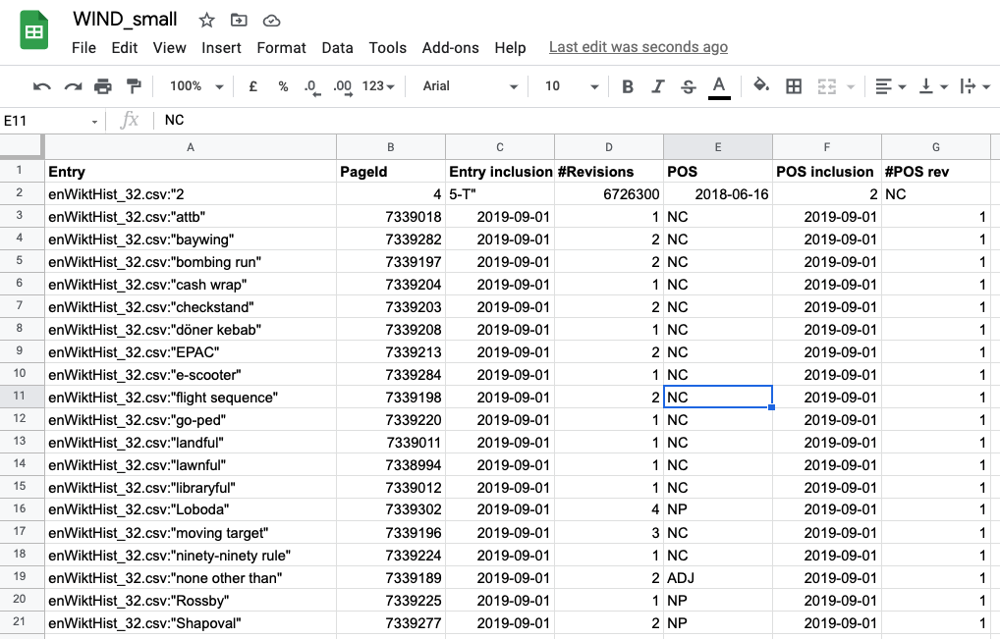
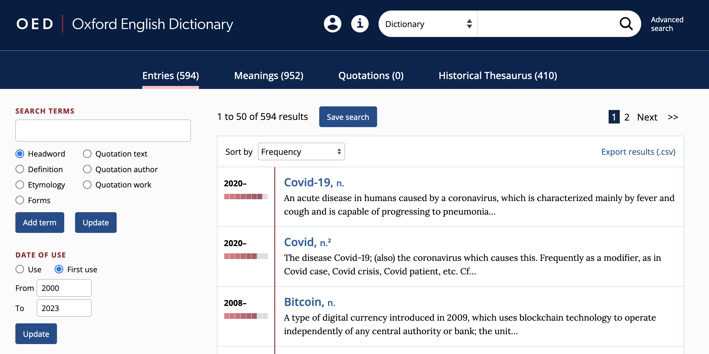

04 Dictionaries: fundamentals, examples, use cases
The Lexicon
Two senses of lexicon
“In the following, I will use lexicon in two senses that are not always sharply distinguished:
a) for a metalinguistic level, or a sub-component in a linguistic model; and
b) in the sense of vocabulary as seen from a systematic, synchronic point of view.”
(Lipka 1992, 11)
Objective of lexicology
- “What is most important, however, is that in lexicology the stock of words or lexical items is not simply regarded as a list of isolated elements.
- Lexicologists try to find out generalisations and regularities and especially consider relations between elements (see chapters n and IV).
- Lexicology is therefore concerned with structures, not with a mere agglomeration of words (cf. (Jackson 1988, 222)).”
(Lipka 1992, 1)
Definition (Bauer 2022)
- “The lexicon is what linguists call the dictionary that is assumed to be in people’s heads, or the linguist’s best approximation to that.
- It is fundamentally a psychological entity, and its contents cannot be observed directly but must be deduced from speakers’ and hearers’ behaviour.
- Two fundamental approaches:
- Home of the lawless (Di Sciullo and Williams 1987) – lexicon contains whatever cannot be predicted by general rule.
- Wider approach – lexicon contains anything to do with the structure of words, whether lawless or not.”
- Home of the lawless (Di Sciullo and Williams 1987) – lexicon contains whatever cannot be predicted by general rule.
The mental lexicon
A cognitive view

Cognitive-linguistic models of the lexicon

Word embeddings (Bandyopadhyay et al. 2022)
Interactive demo: https://projector.tensorflow.org/

Associations in the lexicon
The Stroop Effect (Stroop 1935)

Freudian slip (Bauer 2022)
“If you talk to someone about electricity, and then make them read the phrase sham dock, they might very well say damn shock, because of prior activation of related words; the Freudian slip depends upon a subject area being readily activated in the brain and brought out inadvertently, whether because of a word related in meaning or pronunciation.”
Dictionaries (Bauer 2022)
What is a word?
- “A word is listed in the dictionary.” (p. 2)
But:- circular reasoning – words are listed because they are words
- dictionaries also list smaller units (e.g. prefix un-)
- circular reasoning – words are listed because they are words
- “[…] in general we will accept the spelling conventions of English as defining words. This may not be terribly scientific, but it has the advantage of being practical.” (p. 3)
Definition of dictionary
- “The term dictionary is usually restricted to real-world dictionaries that appear in print and online.
- Dictionaries provide a list of words of whatever language they deal with – in our case, English – and then give a certain amount of information about each of them.
- They tend to have two functions, which may at times conflict:
- Describe the language as it is (descriptive)
- Provide an influence for establishing and maintaining the standard form of the language (prescriptive)”
- Describe the language as it is (descriptive)
Descriptivism vs prescriptivism
“If we assume that one of ’kilometre and ki’lometre is right (and the other therefore wrong), we assume that there is a unique solution to this question of English usage …” (Bauer)
Language questions are more often like the jeans question (multiple acceptable answers) than like the drive-on-the-right question (single legal answer).

Proof of the existence of words
“First of all, dictionaries provide evidence of the existence of a word. The fact that a word is listed in a dictionary at all is taken to prove that there is such a word. This can be misleading in two ways:
- Dictionaries sometimes list erroneous words that have no existence outside the dictionary (e.g. banket, sardel).
- Dictionaries more often fail to list perfectly good words – no dictionary can list every word of English.”
Term-paper idea
- Which words are commonly used (in corpora) but not contained in dictionaries?
- Which words are contained in dictionaries but not commonly used in corpora?
Information provided in the OED
Information provided in the OED

Selected dictionaries
Urban Dictionary

Wiktionary

WIND (Machine-readable Wiktionary)
Sajous, Calderone & Hathout 2020. ‘ENGLAWI: From Human- to Machine-Readable Wiktionary’. LREC 12.
http://redac.univ-tlse2.fr/lexiques/wind.html


Oxford English Dictionary (OED)

Advanced search interface:

Practice: Investigating lexical innovation since 2000 using the OED
Task 1 – Advanced search
Use the OED Advanced search to find all lexemes whose first use is after 2000.

Export the results to a .csv file.
Task 2 – Analyse in Microsoft Excel
Guiding questions:
- Which word-formation processes are most frequent?
- Which word classes are most frequent?
- Which subject areas are most frequent?
Steps:
- Save the exported file as
xlsx.
- Create a Table containing the data (Insert → Table).
- Insert a Pivot Table to analyse process, class, subject.
- Compare findings with compounding.
Model Excel file: https://1drv.ms/x/s!AvkgNVl9yS6aoX4YgazKPYZGog54?e=C3uq5F